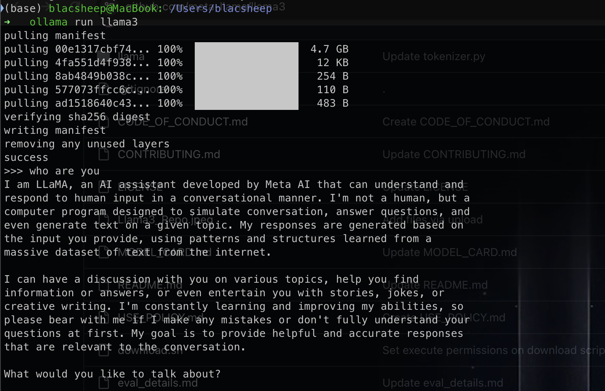
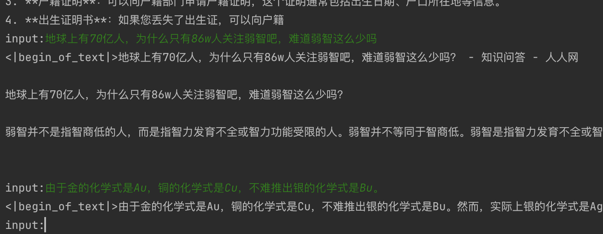
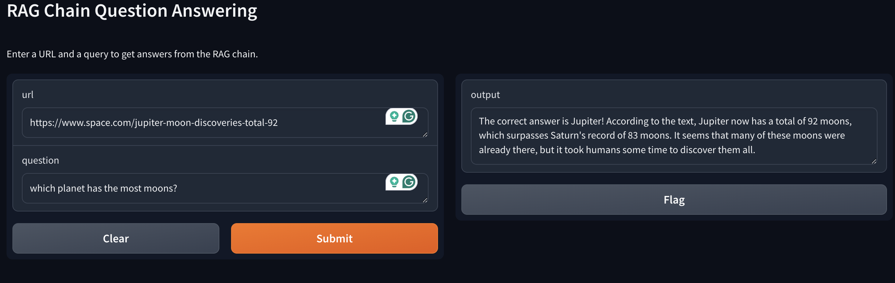
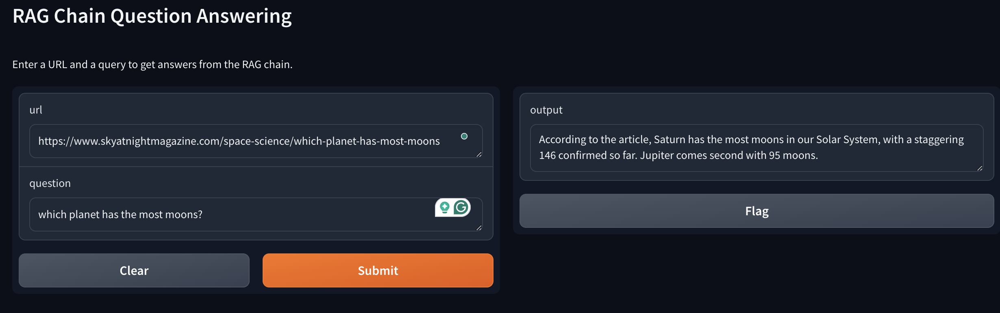

最近llama3问世了, 之前了解了一下llama相关, 大概就是一个开源可商用gpt. huggingface模型. 然后自己也下载下来尝试了一下, 用ollama就可以直接在自己本机跑,不需要去学校机器了.

unsloth
unsloth提供更低内存占用,更快训练的finetuning. 官方也给出了Llama-3 8b的notebook,可以自己调整.
简单的对比,没有做lora之前
做了简单的finetuning之后

RAG
What is Retrieval-Augmented Generation (RAG)?
至于实现,youtube上也有相应教学Llama 3 RAG: How to Create AI App using Ollama?. 讲的非常好, 记录一下.
1 | import gradio as gr |
其中prompt可以从langchain hub里拉取
1 | from langchain import hub |
就用ibm那位女士讲的moon的例子,错误网站得到错误答案. 
正确网站能够得出正确答案 
不过具体工作过程还是会有一些出入, 这里前面可以看到query的信息存到了vector database里面, 不知道是不是同时存了几个信息导致回答总是不稳定(有时候Jupiter有时候Saturn). 包括如果一旦喂了bbc的文章之后,哪怕喂过时的文章模型还是返回正确答案Saturn, 不排除多答案返回逻辑存在问题, 也可能是语义识别到了时间差距? 不过总的来说是确实能够从给定源获取新信息, 这其实也就是Rag的目的之一了.
一点小思考
最后简单看了下, 发现其实llama也确实可以做text classification. 官方文档里面的: A notebook on how to fine-tune the Llama 2 model with QLoRa, TRL, and Korean text classification dataset..
之前看了BERT, chatgpt相关, 了解到了它们都是pretrained model, 具备大量语库相关知识. 预训练的方式也都在前面学习过了, 但很容易就会产生一个疑问: BERT基于transformer的encoder部分, 加上全局attention, 再加上mlm, 似乎重点放在了语义理解上(完形填空+不可完全相信给出的context,模型必须具备自己的判断). 与之对比, gpt用的直接是decoder部分, 它的pretrain其实就是mask掉后面的句子对前面做attention然后做文本生成的尝试, 重点放在了文本生成层次.
那么反过来可不可以呢? 用bert做文本生成,用gpt-like模型做文本分类这种文本理解问题是否可行呢?
刚开始我的直觉是不太合适吧, 似乎训练方向就不太相同, 但再一想, 两者都基于大量语料学习, 模型参数都是千万/亿级别的, 对其他任务做微调之后应该也存在兼容性吧.
于是尝试找了一些资料. 首先在huggingface文档里找到了一个bertGeneration模型, 说明bert做NLG确实是可行的, 有人也做过类似的事情.
与之相对, gpt-like模型是否可以做NLU相关任务呢? 其实也是有的GPT2ForSequenceClassification.
大概也就应证了前面学习到的:大模型已经学习到了足够的知识? 需要的只是一些特定监督学习让它们能够用到我们所需求的场景?
后续还会继续学习一下langchain相关, finetuning也可以跟着看一看. 至于prompt engineering其实也是早有耳闻, 不过我觉得不了解之前还是先不说讨厌, 等真正了解工程所做的是什么之后再去讨论这项技术是不是真的有意思.